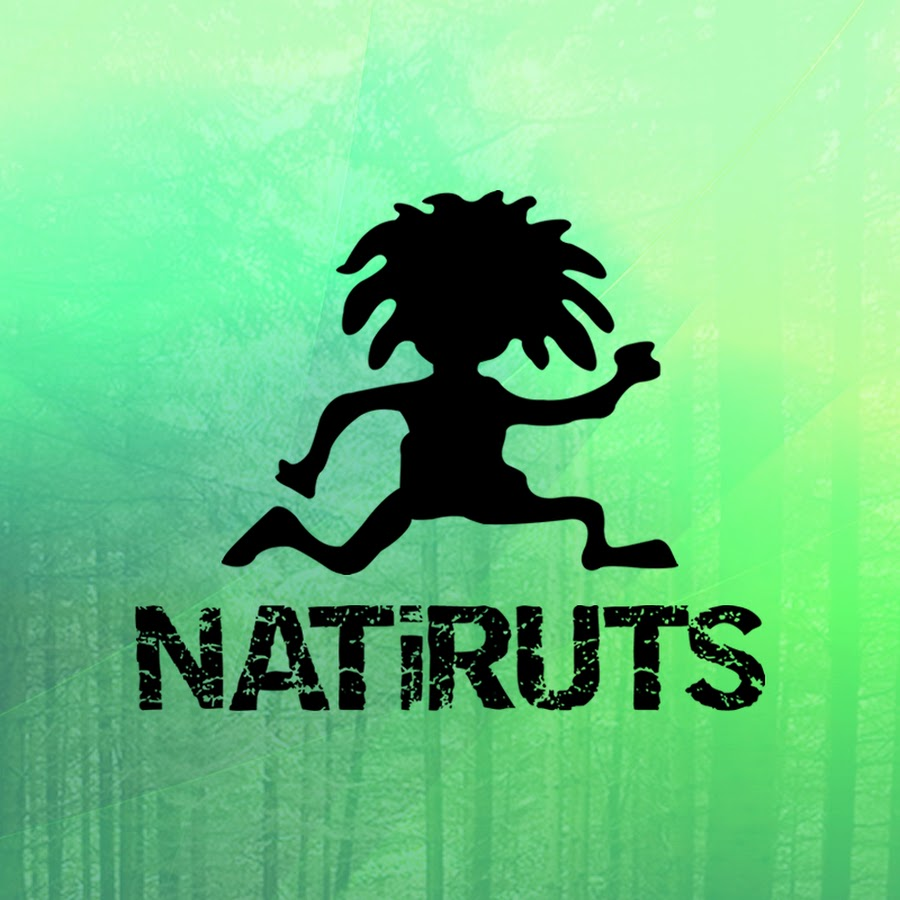
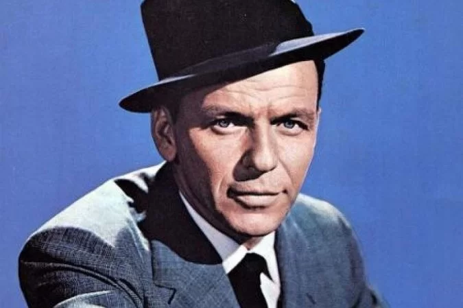

<!DOCTYPE html>
<html lang="pt-br">
<head>
    <meta charset="UTF-8">
    <meta http-equiv="X-UA-Compatible" content="IE=edge">
    <meta name="viewport" content="width=device-width, initial-scale=1.0">
    <title>Ex_012</title>
    <script type="text/javascript">
        //Definindo as variaveis
        var estilo = "";
            //Pede o estilo de musica que o usuario quer
            estilo = prompt("Digite o estilo de música [Samba, Internacional, Reagge, Rock]: ");   
        if (estilo == "Rock" || estilo == "rock"){
        //escreve na tela as informacoes da musica e o player para escutar ela
            document.write("<h2>Nome da Música: Serenata Existencialista</h2>");
            document.write("<h2>Banda: O Grilo</h2><hr>");
            document.write('<audio autoplay controls><source src="serenata.mp3" type="audio/mpeg"></audio><br>');
        }
        // testa para ver se o usuario escolheu esse estilo musical
        else if (estilo == "Samba" || estilo == "samba"){
            //escreve na tela as informacoes da musica e o player para escutar ela
            document.write("<h2>Nome da Música: Quando a Gira Girou</h2>");
            document.write("<h2>Banda: Zeca Pagodinho</h2><hr>");
            document.write('<audio autoplay controls><source src="gira_giro.mp3" type="audio/mpeg"></audio><br>');
        }
        // testa para ver se o usuario escolheu esse estilo musical
        else if (estilo == "Reagge" || estilo == "reagge"){
            //escreve na tela as informacoes da musica e o player para escutar ela
            document.write("<h2>Nome da Música: Me Namora</h2>");
            document.write("<h2>Banda: Natiruts</h2><hr>");
            document.write('<audio autoplay controls><source src="me_namora.mp3" type="audio/mpeg"></audio><br>');
        }
        // testa para ver se o usuario escolheu esse estilo musical
        else if (estilo == "internacional" || estilo == "Internacional"){
            //escreve na tela as informacoes da musica e o player para escutar ela
            document.write("<h2>Nome da Música: I Love You Baby</h2>");
            document.write("<h2>Banda: Frank Sinastra</h2><hr>");
            document.write('<audio autoplay controls><source src="i_love_you.mp3" type="audio/mpeg"></audio><br>');
        }
        //caso o usuario escreva um estilo que nao tem como opcao
        else{
            alert("Não existe esse valor");
        }
    </script>
</head>
<body style="background-color: lightcyan; text-align: center;">
    <script>
        if (estilo == "rock" || estilo == "Rock"){
            document.write('<br>');
            document.write("<div><span>É, às vezes a vida dá dessas</span><br><span>Mas qual é a pressa, meu amor?</span><br ><span >Nosso futuro não é nenhum mistério</span><br><span>Estaremos enterrados em algum cemitério</span></div>");
            document.write("<div><span >Sei que um dia eu vou morrer</span><br><span >E saiba que isso também vale pra você</span><br><span>Mas enquanto esse dia não vem</span><br><span>Quero passar todos os outros ao seu lado</span></div>");
            document.write("<div><span>Meu bem, você precisa entender</span><br><span>Que a minha vida só se torna tolerável com você</span><br><span>Tem que concordar, enquanto nossa hora não chega</span><br><span>A gente pode se beijar, já pode aproveitar</span><br><span>Enquanto nossa hora não chega, a gente pode se beijar</span></div>");
            document.write("<div><span>É, às vezes o tempo se fecha</span><br><span>Nem prece, nem reza vai mudar</span><br><span>Por que se a gente se conheceu</span><br><span>Não foi obra do destino, nem desejo de Deus</span><br><span>Até por que esse cara aí já morreu</span></div>");
        }
        else if (estilo == "samba" || estilo == "Samba"){
            document.write('<br>');
            document.write("<p>Lembro que te vi caminhar<br>Já havia um brilho no olhar<br>E junto com um sorriso seu<br>O teu olhar vem de encontro ao meu<br>E o meu dia se fez mais feliz<br>Mesmo sem você perto de mim<br>Mesmo longe de mim<br>Eu fico o tempo todo a imaginar<br>O que fazer quando te encontrar<br>Mas se eu fizer, o que vai dizer?<br>Será que é capaz de entender?<br>Mesmo se não for eu vou tentar<br>Vou fazer você me notar<br>Por isso eu vim aqui te dizer<br>Me namora<br>Pois quando eu saio sei que você chora<br>E fica em casa só contando as horas<br>Reclama só do tempo que demora<br>Abre os braços, vem e me namora<br>Eu quero dar vazão ao sentimento<br>Mostrar que é lindo o que eu sinto por dentro<br>Beleza essa que eu te canto agora<br>Abre os braços, vem e me namora<br>Eu penso estar vivendo uma ilusão<br>Sem saber se me quer ou não<br>Quem dera se a resposta fosse sim<br>Mas acho que já nem liga pra mim<br>Se for assim, o meu coração<br>Sofre só, sem você em vão<br>Bate mais triste, então<br>Mas ele ainda pode se alegrar<br>Se de repente você reparar<br>Que com você também aconteceu<br>Que sente amor tão grande quanto o meu<br>Abra os olhos, veja quem te adora<br>E sonha com você no mundo afora<br>E volta só pra te dizer<br>Me namora<br>Pois quando eu saio sei que você chora<br>E fica em casa só contando as horas<br>Reclama só do tempo que demora<br>Abre os braços, vem e me namora<br>Eu quero dar vazão ao sentimento<br>Mostrar que é lindo o que eu sinto por dentro<br>Beleza essa que eu te canto agora<br>Abre os braços, vem e me namora<br>Me namora<br>Pois quando eu saio, sei que você chora<br>Que fica em casa só contando as horas<br>Reclama só do tempo que demora<br>Abre os braços vem e me namora<br>Eu quero dar vazão ao sentimento<br>Mostrar que é lindo o que eu sinto por dentro<br>Beleza essa que eu te canto agora<br>Abre os braços, vem e me namora</p>");
        }
        else if (estilo == "reagge" || estilo == "Reagge"){
            document.write('<br>');
            document.write("Lembro que te vi caminhar<br>Já havia um brilho no olhar<br>E junto com um sorriso seu<br>O teu olhar vem de encontro ao meu<br>E o meu dia se fez mais feliz<br>Mesmo sem você perto de mim<br>Mesmo longe de mim<br>Eu fico o tempo todo a imaginar<br>O que fazer quando te encontrar<br>Mas se eu fizer, o que vai dizer?<br>Será que é capaz de entender?<br>Mesmo se não for eu vou tentar<br>Vou fazer você me notar<br>Por isso eu vim aqui te dizer<br>Me namora<br>Pois quando eu saio sei que você chora<br>E fica em casa só contando as horas<br>Reclama só do tempo que demora<br>Abre os braços, vem e me namora<br>Eu quero dar vazão ao sentimento<br>Mostrar que é lindo o que eu sinto por dentro<br>Beleza essa que eu te canto agora<br>Abre os braços, vem e me namora<br>Eu penso estar vivendo uma ilusão<br>Sem saber se me quer ou não<br>Quem dera se a resposta fosse sim<br>Mas acho que já nem liga pra mim<br>Se for assim, o meu coração<br>Sofre só, sem você em vão<br>Bate mais triste, então<br>Mas ele ainda pode se alegrar<br>Se de repente você reparar<br>Que com você também aconteceu<br>Que sente amor tão grande quanto o meu<br>Abra os olhos, veja quem te adora<br>E sonha com você no mundo afora<br>E volta só pra te dizer<br>Me namora");
        }
        else if (estilo == "internacional" || estilo == "Internacional"){
            document.write('<br>');
            document.write("I love you, baby<br>And if it's quite all right<br>I need you, baby<br>To warm these lonely nights<br>I love you, baby<br>Trust in me when I say<br>I love you<br>I love you, baby<br>And if it's quite all right<br>I need you, baby<br>To warm these lonely nights<br>I love you, baby<br>Trust in me when I say<br>I love you");
        }
    </script>
</body>
</html>
